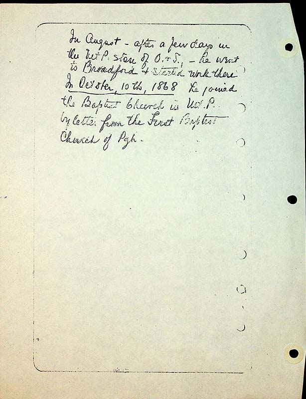

In August- after a few days in the Mt P store of O&S- he went to Broadford & started work there In October, 10th, 1868 he joined the Baptist church in Mt P by letter from the first Baptist Church of Pgh.